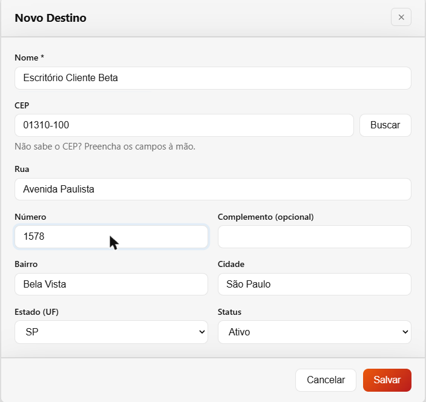
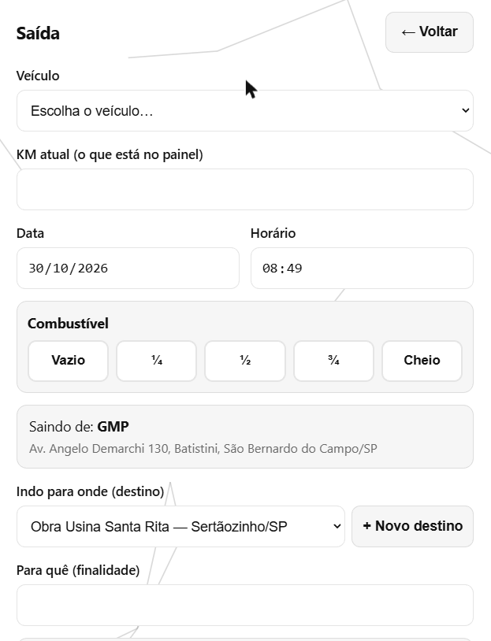
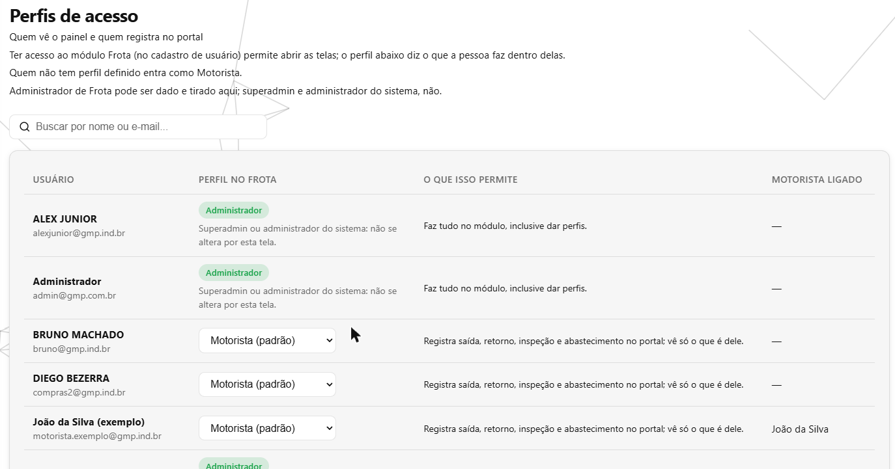
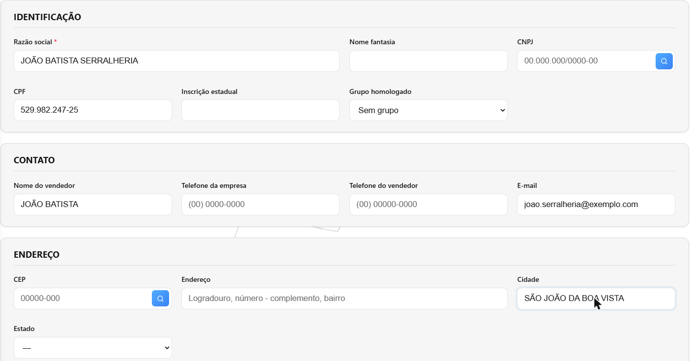
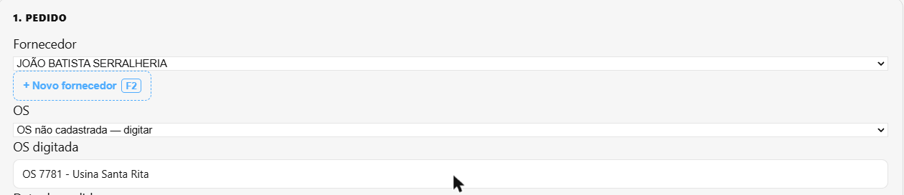
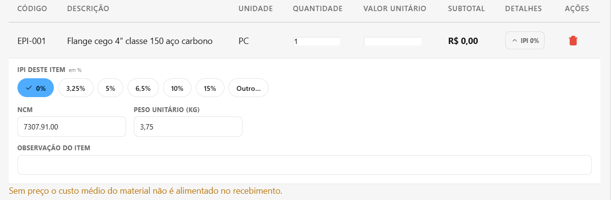
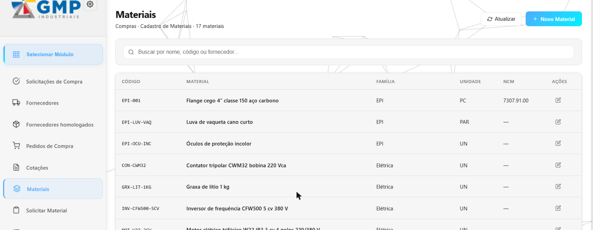

O que foi feito no sistema nesta semana
Semana de 25/10 a 31/10/2026 · CRM GMP Industriais
Na Frota, os destinos ganharam endereço completo (com busca pelo CEP), a saída mostra o endereço da GMP e a lista de destinos, o administrador da Frota passou a ser definido pela própria tela e o motorista tem o botão Voltar no alto dos formulários. No Compras, o fornecedor pessoa física passou a ter CPF e a ficha grava tudo em maiúsculas; o pedido aceita uma OS digitada e já traz o NCM do material; e quem administra o Compras cadastra materiais sem depender do almoxarifado. Foram cerca de 10 horas de desenvolvimento, quase dois terços na Frota.
O que você já pode ver na tela
Destinos com endereço completo
Onde: Frota → Destinos → Novo Destino (e o "+ Novo destino" da saída e da viagem)
Antes: o destino era só um nome digitado, e na tela de Viagens do escritório o destino ainda era texto livre.
Agora: digite o CEP e toque Buscar: rua, bairro, cidade e estado se preenchem sozinhos. Quem não sabe o CEP preenche à mão. A lista de destinos mostra "Nome — Cidade/UF", e a Nova Viagem do escritório escolhe o destino da mesma lista.

Saída do veículo: de onde sai, para onde vai e o Voltar no alto
Onde: Frota → Meu painel (celular do motorista) → Saída
Antes: origem e destino eram digitados; para desistir, o motorista rolava a tela inteira até o botão Voltar.
Agora: "Saindo de: GMP" aparece fixo, com o endereço da empresa; o destino é escolhido da lista (ou cadastrado na hora); em carro liberado para funcionários, o formulário pede quem vai dirigir; e o ← Voltar está ao lado do título em Saída, Retorno, Inspeção e Abastecimento. O abastecimento deixou de pedir foto.

Administrador da Frota definido pela tela
Onde: Frota → Perfis de acesso
Antes: a tela só oferecia Motorista e Consulta; para alguém administrar a Frota era preciso pedir ajuste por fora.
Agora: o perfil Administrador é escolhido ali mesmo, e quem deixa de ser administrador vê o menu mudar ao abrir o painel da Frota.

Fornecedor com CPF, e tudo em maiúsculas
Onde: Compras → Fornecedores → Novo Fornecedor (e o atalho F2 do pedido e da cotação)
Antes: o fornecedor pessoa física não tinha onde guardar o CPF, e cada um digitava o nome do seu jeito.
Agora: campo CPF com conferência dos dígitos (um fornecedor tem CPF ou CNPJ, não os dois); a razão social, o nome fantasia, o contato e o endereço ficam em maiúsculas enquanto se digita. O e-mail fica como foi digitado. A lista mostra o CPF quando não há CNPJ, e o pedido impresso também.

Pedido de compra: OS digitada e NCM já preenchido
Onde: Compras → Pedidos de Compra → Novo pedido
Antes: só dava para escolher uma OS cadastrada no sistema; e o item novo aparecia com o NCM vazio e o aviso "o do cadastro do material", embora o NCM já estivesse no cadastro.
Agora: a opção OS não cadastrada — digitar abre um campo para o número da OS. Ela aparece na lista, no Excel e no pedido impresso (não separa material no estoque, porque a OS não existe no sistema). E o item já entra com o NCM e o peso do material.


Cadastro de materiais dentro do Compras
Onde: Compras → Materiais
Antes: material novo só era cadastrado no Almoxarifado, pelo almoxarife ou pela engenharia; o comprador ficava esperando.
Agora: o Compras tem a sua tela de Materiais, para incluir e editar com o mesmo formulário. Quem administra o Compras (marcado no cadastro de usuário) pode usar. Saldo, foto e exclusão continuam no Almoxarifado.

O que foi feito por baixo — e por que importa
Parte do trabalho não muda a aparência das telas: é o “motor” que faz as contas e guarda as informações. Quando ele erra, o erro aparece depois, em forma de cadastro duplicado ou de estoque que não bate. Esta semana, no motor:
A busca continua achando nomes com acento
O problema: com os fornecedores gravados em maiúsculas, digitar "aços" na busca de pedidos, de cotações ou do recebimento deixava de achar "AÇOS BRASIL" — o sistema só ignorava maiúscula e minúscula nas letras sem acento.
O que foi feito: as quatro buscas que mostram fornecedor passaram a comparar sem se importar com maiúsculas, também nas letras com acento e no ç.
O que isso evita: o comprador achar que o fornecedor sumiu e cadastrá-lo de novo.
Duas pessoas editando o mesmo fornecedor
O problema: se uma pessoa gravava o CPF e outra, no mesmo instante, o CNPJ do mesmo fornecedor, ele podia ficar com os dois.
O que foi feito: a conferência "CPF ou CNPJ, não os dois" passou a ser feita no próprio momento de gravar.
O que isso evita: fornecedor com documento duplicado e pedido impresso com o dado errado.
O Compras cadastra material sem mexer no estoque
O problema: a conferência antes da entrega mostrou que uma pessoa com o Compras e uma permissão antiga do Almoxarifado conseguiria lançar saldo inicial pela tela nova, sem nem ter acesso ao Almoxarifado.
O que foi feito: pelo Compras nunca se mexe em saldo nem em controle de estoque, seja qual for a permissão; isso continua só no Almoxarifado.
O que isso evita: estoque aparecendo do nada, lançado por quem não cuida do almoxarifado.
Frota: menu que se atualiza, aviso de destino renomeado e fotos
O problema: quem deixava de ser administrador da Frota continuava vendo o menu antigo até recarregar a página; uma viagem antiga editada não dizia que o destino tinha mudado de nome; e uma foto errada só saía pedindo ajuda.
O que foi feito: o painel da Frota atualiza o menu quando o perfil muda; a edição da viagem avisa os dois nomes do destino; o gestor remove uma foto direto pela lista.
O que isso evita: botões que aparecem e não funcionam, confusão sobre para onde a viagem foi, e foto errada guardada para sempre.
Planejamento: um pedido de compra para várias OS
O problema: o pedido de compra hoje atende uma OS só, e a empresa quer comprar para várias de uma vez.
O que foi feito: o levantamento completo do que muda (o pedido, o documento impresso, o recebimento que separa o material para a OS certa e o encerramento da OS), em oito partes, com o tempo de cada uma — cerca de 25 horas no total — e quatro pontos para a empresa confirmar antes de começar.
O que isso evita: começar uma mudança grande sem saber o tamanho, e o material de uma OS ir parar em outra.
Também foram feitos: o ajuste do layout do celular do motorista, os guias de uso da Frota em PDF (motorista e gestor) e a retirada do botão de ajuda "?" do canto da tela, que não era mais usado.
Para onde foi o tempo
Cerca de 10 horas de desenvolvimento nesta semana.
Tempo por atividade
| Atividade | Horas |
|---|---|
| Frota — destinos com endereço, saída da GMP, condutor, perfis, fotos, celular e Voltar | 6 h |
| Compras — CPF e maiúsculas no fornecedor, OS digitada, NCM, materiais no Compras e o planejamento das várias OS | 3 h |
| Estimativas de tempo e organização do trabalho | 1 h |
| Total | 10 h |
Mais de um terço do tempo foi para as conferências automáticas: robôs que repetem centenas de situações a cada mudança — dois compradores salvando o mesmo fornecedor, um CPF com um dígito errado, um destino desativado no meio da saída — para que nada que já funcionava quebre escondido. Outra boa parte foi para os manuais e para as estimativas, que a empresa passou a receber antes de cada alteração.
Estimado × realizado
Desde 29/10 cada alteração recebe uma estimativa antes de começar. O tempo estimado inclui análise, testes na tela, conferência e manuais — por isso é maior que as horas de desenvolvimento registradas acima.
| Alteração | Estimado | Realizado |
|---|---|---|
| Frota — endereço do destino, destino na viagem do escritório e retirada do botão de ajuda | 10h | 9h |
| Frota — menu acompanha a troca de perfil | 3h | 2h30 |
| Frota — conferência da saída de dois motoristas ao mesmo tempo | 1h30 | 1h30 |
| Frota — aviso de destino renomeado | 1h30 | 1h30 |
| Fornecedores, pedido de compra, materiais no Compras e Voltar da Frota (8 itens) | 13h15 | 13h15 |
| Total | 29h15 | 27h45 |
As horas são estimadas pelo registro do trabalho salvo ao longo da semana. Pesquisa, conversas e testes feitos à mão não entram — o número real é maior.
Quer conferir?
- Abra Frota → Destinos → Novo Destino, digite um CEP e toque Buscar: o endereço se preenche.
- No celular, entre em Frota → Meu painel → Saída: veja "Saindo de: GMP", a lista de destinos e o ← Voltar no alto.
- Abra Frota → Perfis de acesso e escolha Administrador para alguém.
- Abra Compras → Fornecedores → Novo Fornecedor, digite o nome em minúsculas e um CPF: o nome fica em maiúsculas.
- Abra Compras → Pedidos de Compra → Novo, escolha OS não cadastrada — digitar, inclua um material e abra os "detalhes" do item: o NCM já está lá.
- Abra Compras → Materiais com quem administra o Compras e toque Novo Material.